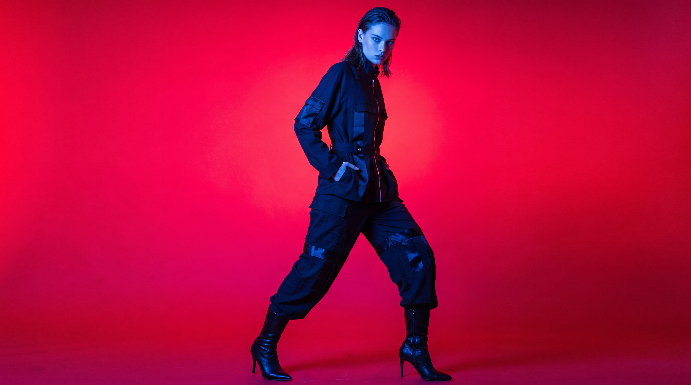
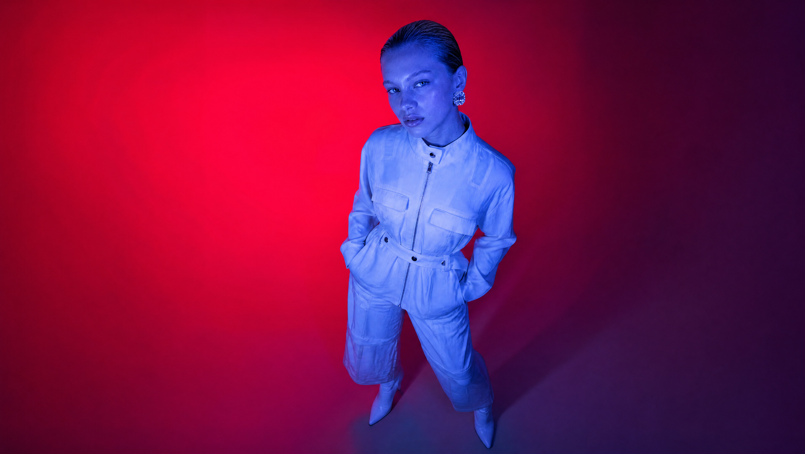
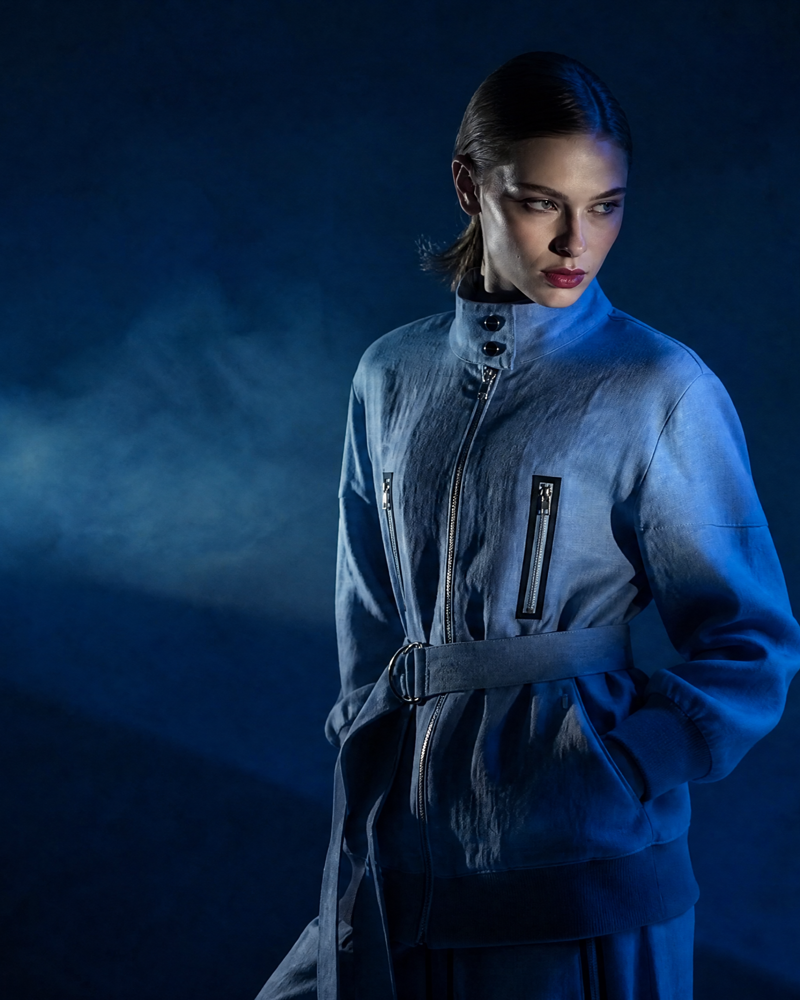
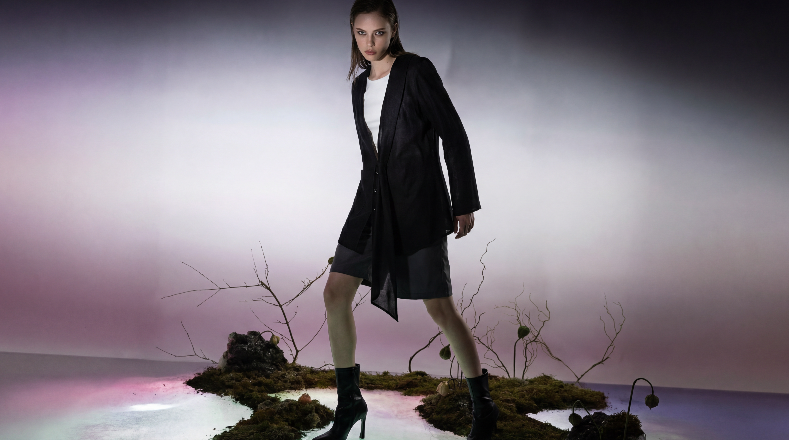

JAY POSH
"I didn't understand which version of my visual identity was the real one, until I decided that they all were."

The materials are a combination of thick heavy fabrics, knits, and lightweight materials. Experimenting with textures to create a rugged appearance.
Balancing symmetry and chaos. Redefining modern femininity through creative pattern making and cinematic storytelling.


MANY ELEMENTS APPEAR THROUGHOUT THE COLLECTION, FROM FABRICATION, STYLING TO ACCESSORIES.

Metallic elements such as zips, buckles and buttons were employed to create a rugged appearance, along with styled statement accessories.


